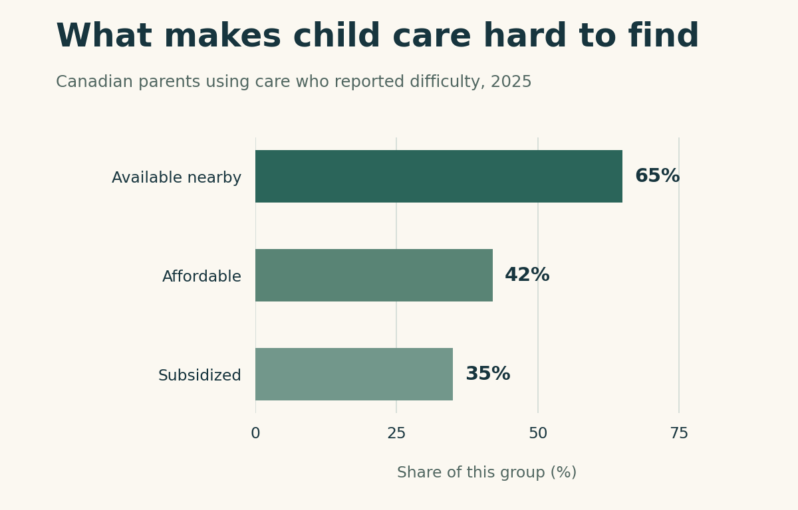

Published by ReviewRemoval. Authorship, sources and correction standards.
On this page
A family checking a child care centre may have only a few openings to consider. A review about a different branch can make it harder to decide which centre to contact. When the post exposes a child’s private information, the director also needs to consider the centre’s privacy and safeguarding procedures. ReviewRemoval can assess whether the public post raises a Google policy issue.
Request a free child care centre assessment
Answer the questions families are already asking
Statistics Canada found that among parents using child care who had difficulty finding it in 2025, availability in their community was the most commonly reported challenge. Affordability and subsidized care were other common concerns. If your centre has several sites, make it easy to identify which age groups and schedules each site serves and how to ask about fees or a waitlist. Statistics Canada’s 2025 child care release.

View chart data
| Challenge reported | Share of this group |
|---|---|
| Available nearby | 65% |
| Affordable | 42% |
| Subsidized | 35% |
The survey measures difficulties finding care. Use your own enquiry records to learn which questions families ask before scheduling a tour.
Check the location, privacy and safety concerns
- Different centre. Save the public link and the wording about the street, operator or programme that identifies another location.
- Private information. Follow your centre’s process when a post exposes identifying information. Keep any necessary evidence secure and avoid repeating children’s names in a reply.
- Genuine concern about care. Bring it to the centre director and follow the applicable safeguarding, notification and complaint procedures. Keep a separate record of any Google policy issue in the post.
Ontario’s Ministry of Education explains how it investigates child care complaints and publishes information about enforcement. Parents should be able to find the relevant public information for your province. Ontario’s child care rules and complaint process · Google Maps content policies.
Track enquiries by centre and age group
Track requests for tours or places by location, age group and approximate start date. If families ask about a claim in a review, check whether your public information gives them an accurate answer. Avoid recording names or details about children in a marketing spreadsheet.
A centre can still receive inquiries even when most slots are already full. When comparing numbers, separate all parent queries from those for a programme with availability. That gives you a clearer view of what the profile is doing for the centre.
Start with a short, non-identifying account
ReviewRemoval can assess the public post without needing family records. Send the link and explain the mismatch or other potential policy issue in broad terms. If you approve a quote, we prepare the report and handle the follow-up included in the scope. Use the reporting evidence checklist.
For approved work, ReviewRemoval charges CAD $50 upfront per review and CAD $125 per successful removal, before applicable taxes. See what the fees cover.
Need help with a specific review?
Send a public link and describe the potential policy concern in general terms. Keep children’s names, photos and family records private.
Request a free child care centre assessment